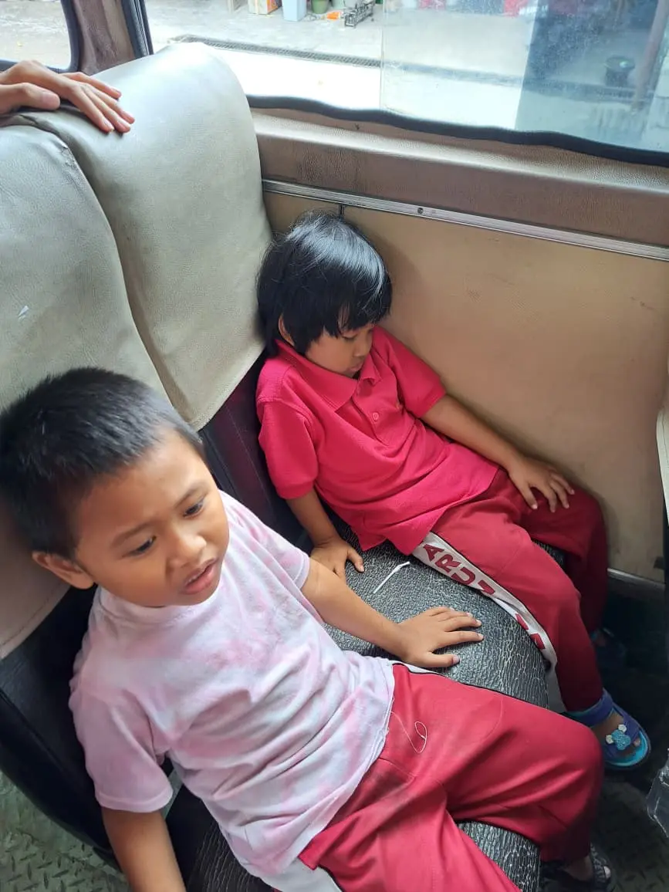
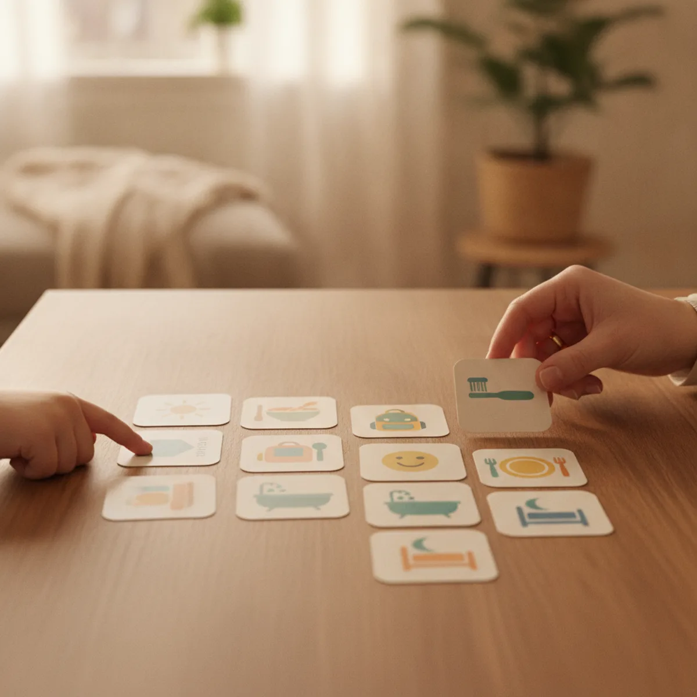
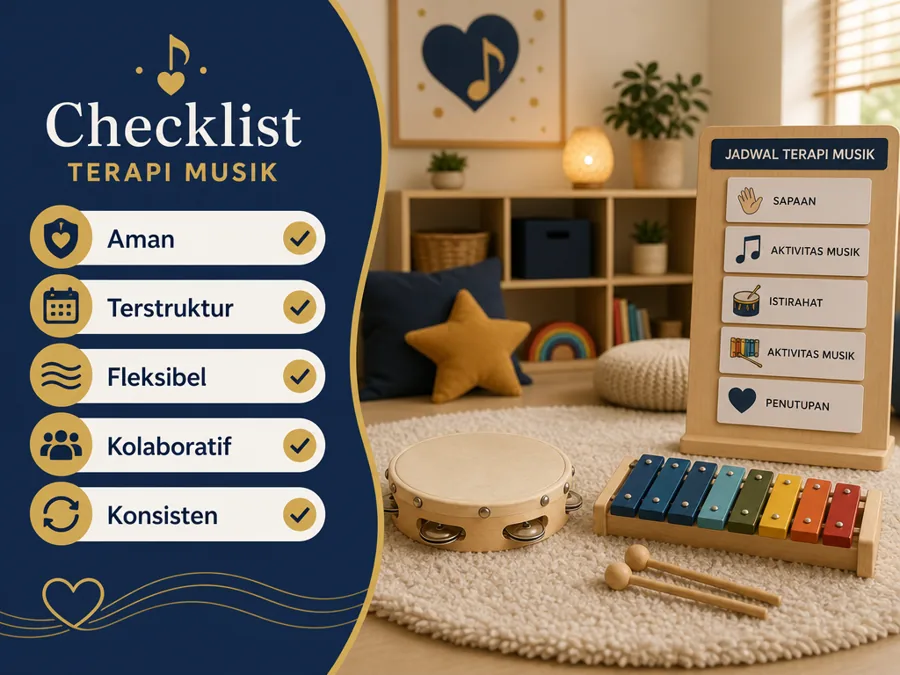

Gangguan tidur pada anak ADHD dapat tampak sebagai sulit mulai tidur, waktu tidur yang mundur, sering terbangun, atau rasa mengantuk pada siang hari. Masalah ini tidak boleh langsung dianggap sebagai anak sengaja melawan. Anak mungkin membutuhkan bantuan untuk memperlambat aktivitas, memahami urutan malam, atau menyesuaikan rencana perawatan bersama dokter.
Artikel ini membahas langkah yang dapat dilakukan keluarga tanpa menggantikan pemeriksaan medis. ADHD tidak dapat ditegakkan hanya dari satu tanda, begitu juga gangguan tidur perlu dilihat dari pola yang berulang dan dampaknya pada fungsi anak. Catat pola selama beberapa hari, lalu bawa catatan itu saat berkonsultasi.
Catatan keamanan
Jangan memberi obat tidur, suplemen, atau mengubah waktu dan dosis obat ADHD tanpa arahan dokter. CDC menyebut beberapa obat stimulan dapat berhubungan dengan kesulitan tidur, sehingga perubahan atau efek samping perlu dibicarakan dengan tenaga kesehatan, bukan diatasi sendiri.
Daftar Isi
Mengapa ADHD dan Tidur Bisa Saling Memengaruhi?
Tidur membantu anak memulihkan energi, mengatur emosi, dan siap mengikuti kegiatan esok hari. Sebaliknya, anak yang terlalu lelah dapat terlihat lebih mudah marah, sulit memusatkan perhatian, atau lebih aktif. Tanda-tanda ini bisa menyerupai atau memperberat kesulitan yang sudah ada pada ADHD. Karena itu, keluarga sebaiknya tidak menyimpulkan bahwa setiap masalah malam pasti disebabkan ADHD.
CDC memasukkan tidur sesuai kebutuhan usia sebagai salah satu kebiasaan sehat untuk anak dengan ADHD. CDC juga menjelaskan bahwa rencana penanganan perlu disesuaikan dengan anak, keluarga, dan lingkungannya. Artinya, tidur bukan perlombaan untuk membuat anak langsung pulas, tetapi bagian dari fungsi harian yang perlu diamati bersama.
Hubungan itu bisa berjalan dua arah. Kesulitan memulai tidur membuat pagi terasa berat. Pagi yang tergesa-gesa kemudian meningkatkan konflik, tugas tertunda, dan kelelahan seluruh keluarga. Memutus siklusnya dapat dimulai dari satu perubahan kecil yang konsisten, bukan sepuluh aturan baru sekaligus.
Tanda Gangguan Tidur yang Perlu Dicatat
Selama satu sampai dua minggu, tulis waktu anak masuk tempat tidur, perkiraan waktu tertidur, kapan terbangun, dan bagaimana kondisinya pada siang hari. Catatan sederhana membantu membedakan kejadian sesekali dari pola yang menetap. Beberapa hal yang layak dicatat antara lain:
- anak membutuhkan waktu sangat lama untuk tertidur hampir setiap malam;
- jadwal tidur terus bergeser sampai jauh lebih malam daripada kebutuhan keluarga;
- anak sering terbangun, mendengkur keras, terengah, atau tampak kesulitan bernapas;
- anak sangat mengantuk, mudah tertidur di kendaraan, atau sulit bangun meskipun durasi di tempat tidur terlihat cukup;
- emosi dan perhatian berubah nyata setelah beberapa malam tidur buruk; atau
- orang tua harus mendampingi dengan cara yang makin berat agar anak mau tidur.

Foto atau catatan bukan alat diagnosis. Fungsinya adalah memberi gambaran yang lebih konkret kepada dokter. Bila ada jeda napas, dengkuran keras, gerakan kaki yang mengganggu, atau keluhan fisik lain, tuliskan juga karena mungkin membutuhkan pemeriksaan berbeda.
Faktor yang Mungkin Berperan
Tidak ada satu penyebab yang berlaku untuk semua anak. Beberapa faktor dapat muncul bersamaan:
- Aktivitas dan rangsangan menjelang malam. Permainan aktif, layar, suara ramai, atau percakapan yang menegangkan dapat membuat tubuh belum siap beristirahat.
- Transisi yang mendadak. Anak yang kesulitan berpindah kegiatan bisa merasa waktu tidur datang terlalu cepat. Peringatan dan urutan yang dapat diprediksi membantu transisi.
- Kecemasan atau kekhawatiran. Pertanyaan yang muncul ketika lampu dimatikan perlu didengarkan. Bila kecemasan menetap, minta bantuan tenaga kesehatan.
- Lingkungan tidur. Cahaya, suhu, suara, kasur, atau kebiasaan tidur bersama dapat memengaruhi kenyamanan. Perubahan dilakukan bertahap agar anak tidak merasa kehilangan kendali.
- Rencana perawatan dan obat. CDC menyebut kesulitan tidur dapat menjadi efek samping sebagian obat stimulan. Jangan menghentikan atau memajukan jadwal obat sendiri. Sampaikan waktu minum obat, waktu makan, dan pola tidur kepada dokter.
Pada sebagian anak, masalah tidur juga dapat berkaitan dengan kondisi lain. Itu alasan mengapa artikel internet tidak cukup untuk menentukan penyebab. Tugas keluarga adalah mengamati, menjaga kebiasaan dasar, dan membawa informasi yang rapi ke tenaga kesehatan.
Membangun Rutinitas Malam yang Realistis
American Academy of Pediatrics melalui HealthyChildren.org menyarankan rutinitas tidur yang konsisten dan dapat diprediksi. Keluarga tidak perlu membuat ritual panjang. Pilih tiga sampai lima langkah yang dapat diulang dalam urutan sama, misalnya merapikan barang, mandi atau cuci muka, sikat gigi, membaca singkat, lalu lampu redup.
Gunakan kalimat pendek dan satu instruksi pada satu waktu. Beri pilihan terbatas, seperti memilih piyama biru atau hijau, agar anak merasa memiliki kendali tanpa membuka negosiasi baru yang panjang. Jika anak belum siap, berikan pengingat beberapa menit sebelum perpindahan, lalu ulangi dengan nada yang sama.

Letakkan jadwal di tempat yang dapat dilihat anak, bukan hanya disimpan di ponsel orang tua. Tandai langkah yang sudah selesai dengan cara yang menyenangkan. Bila satu langkah selalu memicu konflik, pecah menjadi bagian yang lebih kecil atau evaluasi apakah waktunya terlalu mepet.
Jaga jam bangun agar relatif konsisten dan atur kegiatan pagi supaya tidak selalu terburu-buru. Bila perubahan jadwal diperlukan, lakukan perlahan dan perhatikan respons anak. Tujuan rutinitas bukan kesempurnaan. Tujuannya adalah membuat malam lebih mudah dipahami dan lebih aman.
Menyiapkan Kamar dan Transisi yang Lebih Tenang
Mulailah dari hal yang paling mengganggu. Jika cahaya dari luar membuat anak sulit rileks, gunakan tirai. Jika suara tertentu mengganggu, kurangi sumbernya. Hindari menjadikan kamar sebagai tempat hukuman. Kamar sebaiknya tetap diasosiasikan dengan rasa aman dan istirahat.
Aktivitas menenangkan dapat berupa membaca, menggambar ringan, mendengarkan musik lembut, atau latihan napas sederhana. Gambar berikut adalah contoh ruang aktivitas yang tertata, bukan resep terapi ADHD. CDC menekankan bahwa strategi perilaku dan pelatihan orang tua perlu dibahas dengan tenaga kesehatan yang memahami kebutuhan anak.

Batasi layar menjelang tidur bila layar membuat anak makin terjaga. Ganti dengan aktivitas yang lebih pelan, tetapi tetap beri masa transisi. Anak tidak selalu bisa berpindah dari video yang seru ke tempat tidur dalam satu detik hanya karena orang dewasa meminta.
Orang tua juga perlu menyepakati respons yang sama. Bila satu orang terus memperpanjang negosiasi sementara yang lain mematikan lampu lebih cepat, anak menerima pesan yang berbeda. Bicarakan aturan saat semua orang sedang tenang, bukan ketika konflik sedang berlangsung.
Kapan Perlu Berkonsultasi?
Buat janji dengan dokter anak, psikiater anak, atau tenaga kesehatan yang menangani ADHD bila gangguan tidur berlangsung terus, mengganggu sekolah dan keselamatan, atau membuat keluarga tidak sanggup menjalankan hari. Bawa catatan tidur, daftar obat dan suplemen, waktu pemberian obat, serta perubahan yang sudah dicoba.
Konsultasi lebih segera bila anak mendengkur keras, sering terengah atau berhenti bernapas, mengalami kantuk berat pada siang hari, berjalan saat tidur dan berisiko cedera, atau menunjukkan perubahan perilaku yang sangat berbeda. Bila ada keadaan darurat pernapasan atau keselamatan, cari layanan gawat darurat.
Dokter mungkin menanyakan kebiasaan tidur, kesehatan fisik, suasana hati, kecemasan, dan jadwal sekolah. Pemeriksaan itu bukan berarti orang tua gagal membuat rutinitas. Justru informasi keluarga membantu tenaga kesehatan memilih langkah yang lebih tepat. CDC juga menganjurkan agar orang tua bekerja sama dengan tenaga kesehatan, guru, dan anggota keluarga lain dalam menyusun dukungan anak.
Pertanyaan yang Sering Diajukan
Apakah semua anak ADHD pasti mengalami gangguan tidur?
Tidak. Sebagian anak ADHD mengalami masalah tidur, tetapi tidak semua. Pola tidur dipengaruhi usia, kesehatan, lingkungan, rutinitas, kecemasan, dan rencana perawatan. Amati anak sebagai individu dan hindari menyamakan semua perilaku dengan ADHD.
Apakah melatonin aman untuk anak ADHD?
Jangan memulai melatonin atau suplemen lain tanpa berdiskusi dengan dokter. Dokter perlu menilai penyebab gangguan tidur, obat lain, usia, kondisi kesehatan, dan rencana pemantauan. Suplemen bukan jalan pintas untuk menggantikan evaluasi.
Bagaimana jika anak menolak jadwal visual?
Mulai dari dua atau tiga langkah yang paling mudah dan biarkan anak memilih bentuk penanda yang disukai. Gunakan jadwal sebagai bantuan, bukan ancaman. Jika penolakan tetap kuat, tanyakan apakah gambar, urutan, bahasa, atau waktu pengenalan jadwal perlu diubah.
Apakah tidur siang harus dilarang?
Tidak ada aturan yang sama untuk semua usia. Perhatikan apakah tidur siang terlalu sore membuat anak makin sulit tidur malam. Diskusikan kebutuhan tidur anak dengan dokter, terutama bila anak tetap sangat mengantuk pada siang hari.
Pendampingan di YUKA
YUKA mendampingi pendidikan anak berkebutuhan khusus dan dapat membantu keluarga membicarakan rutinitas belajar serta kebutuhan dukungan di sekolah. YUKA bukan layanan diagnosis atau pengobatan gangguan tidur. Untuk keluhan medis, konsultasikan anak ke tenaga kesehatan. Informasi pendidikan inklusi tersedia di Sekolah Inklusi Taruna Imani Sleman.
Artikel Terkait
Sumber dan Referensi
- Treatment of ADHD, Centers for Disease Control and Prevention
- Parent Training in Behavior Management, Centers for Disease Control and Prevention
- ADHD in Children, Centers for Disease Control and Prevention
- Bedtime Routines for School-Aged Children, American Academy of Pediatrics / HealthyChildren.org
- Brush, Book, Bed: How to Structure Your Child’s Nighttime Routine, American Academy of Pediatrics / HealthyChildren.org
Disclaimer: Artikel ini bersifat edukasi umum dan bukan pengganti diagnosis, konseling, atau pengobatan dari dokter, psikolog, atau psikiater. Sumber dicek pada 27 September 2026.